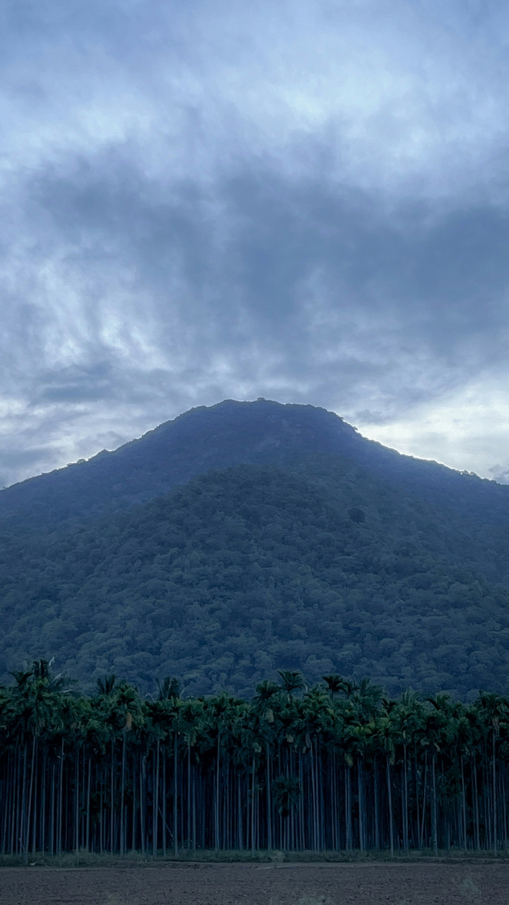

Nitish Surelia
Learn with your hands in the pile
Coimbatore, India · Oct 19 to 30
with the Isha Foundation and the Conscious Planet Save Soil movement

Nitish Surelia
Coimbatore, India · Oct 19 to 30
with the Isha Foundation and the Conscious Planet Save Soil movement